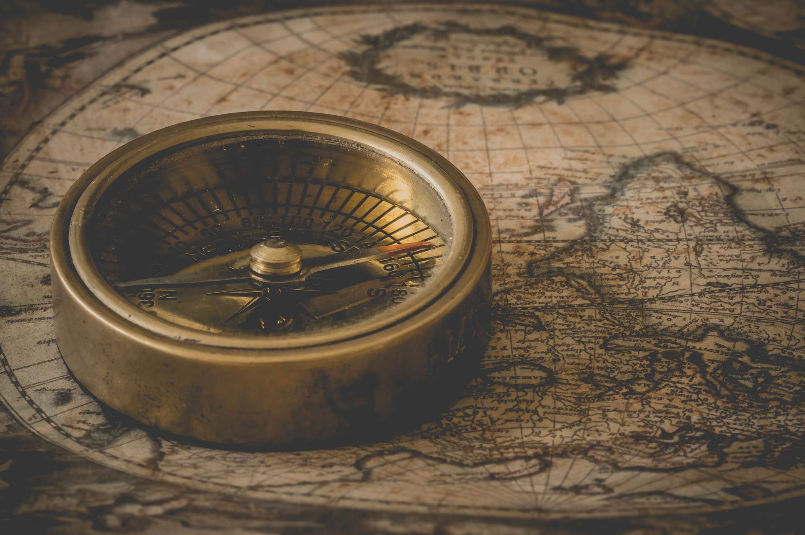

Albert Einstein was born in Ulm, in the Kingdom of Württemberg in the German Empire, on March 14, 1879. His parents were Hermann Einstein, a salesman and engineer, and Pauline Koch. In 1880, the family moved to Munich, where Einstein's father and his uncle Jakob founded Elektrotechnische Fabrik J. Einstein & Cie, a company that manufactured electrical equipment based on direct current.

At age 13, when he had become more seriously interested in philosophy (and music), Einstein was introduced to Kant's Critique of Pure Reason, and Kant became his favorite philosopher, his tutor stating: "At the time he was still a child, only thirteen years old, yet Kant's works, incomprehensible to ordinary mortals, seemed to be clear to him."[24] In 1895, at the age of 16, Einstein took the entrance examinations for the Swiss Federal Polytechnic School in Zürich (later the Eidgenössische Technische Hochschule, ETH). He failed to reach the required standard in the general part of the examination,[27] but obtained exceptional grades in physics and mathematics.[28] On the advice of the principal of the polytechnic school, he attended the Argovian cantonal school (gymnasium) in Aarau, Switzerland, in 1895 and 1896 to complete his secondary schooling. While lodging with the family of professor Jost Winteler, he fell in love with Winteler's daughter, Marie. Albert's sister Maja later married Winteler's son Paul.[29] In January 1896, with his father's approval, Einstein renounced his citizenship in the German Kingdom of Württemberg to avoid military service.[30] In September 1896, he passed the Swiss Matura with mostly good grades, including a top grade of 6 in physics and mathematical subjects, on a scale of 1–6. At 17, he enrolled in the four-year mathematics and physics teaching diploma program at the Zürich polytechnic school. Marie Winteler, who was a year older, moved to Olsberg, Switzerland, for a teaching post.[29] Einstein's future wife, a 20-year-old Serbian woman Mileva Marić, also enrolled at the polytechnic school that year. She was the only woman among the six students in the mathematics and physics section of the teaching diploma course. Over the next few years, Einstein's and Marić's friendship developed into romance, and they read books together on extra-curricular physics in which Einstein was taking an increasing interest. In 1900, Einstein passed the exams in Maths and Physics and was awarded the Federal teaching diploma.[32] There have been claims that Marić collaborated with Einstein on his 1905 papers,[33][34] known as the Annus Mirabilis papers, but historians of physics who have studied the issue find no evidence that she made any substantive contributions.[35][36][37][38]Albert Einstein was born in Ulm, in the Kingdom of Württemberg in the German Empire, on March 14, 1879.[5] His parents were Hermann Einstein, a salesman and engineer, and Pauline Koch. In 1880, the family moved to Munich, where Einstein's father and his uncle Jakob founded Elektrotechnische Fabrik J. Einstein & Cie, a company that manufactured electrical equipment based on direct current.
The Einsteins were non-observant Ashkenazi Jews, and Albert attended a Catholic elementary school in Munich, from the age of 5, for three years. At the age of 8, he was transferred to the Luitpold Gymnasium (now known as the Albert Einstein Gymnasium), where he received advanced primary and secondary school education until he left the German Empire seven years later.[18] In 1894, Hermann and Jakob's company lost a bid to supply the city of Munich with electrical lighting because they lacked the capital to convert their equipment from the direct current (DC) standard to the more efficient alternating current (AC) standard.[19] The loss forced the sale of the Munich factory. In search of business, the Einstein family moved to Italy, first to Milan and a few months later to Pavia. When the family moved to Pavia, Einstein, then 15, stayed in Munich to finish his studies at the Luitpold Gymnasium. His father intended for him to pursue electrical engineering, but Einstein clashed with authorities and resented the school's regimen and teaching method. He later wrote that the spirit of learning and creative thought was lost in strict rote learning. At the end of December 1894, he traveled to Italy to join his family in Pavia, convincing the school to let him go by using a doctor's note.[20] During his time in Italy he wrote a short essay with the title "On the Investigation of the State of the Ether in a Magnetic Field". Einstein always excelled at math and physics from a young age, reaching a mathematical level years ahead of his peers. The twelve-year-old Einstein taught himself algebra and Euclidean geometry over a single summer. Einstein also independently discovered his own original proof of the Pythagorean theorem at age 12.A family tutor Max Talmud says that after he had given the 12-year-old Einstein a geometry textbook, after a short time "[Einstein] had worked through the whole book. He thereupon devoted himself to higher mathematics... Soon the flight of his mathematical genius was so high I could not follow." His passion for geometry and algebra led the twelve-year-old to become convinced that nature could be understood as a "mathematical structure". Einstein started teaching himself calculus at 12, and as a 14-year-old he says he had "mastered integral and differential calculus". At age 13, when he had become more seriously interested in philosophy (and music), Einstein was introduced to Kant's Critique of Pure Reason, and Kant became his favorite philosopher, his tutor stating: "At the time he was still a child, only thirteen years old, yet Kant's works, incomprehensible to ordinary mortals, seemed to be clear to him." In 1895, at the age of 16, Einstein took the entrance examinations for the Swiss Federal Polytechnic School in Zürich (later the Eidgenössische Technische Hochschule, ETH). He failed to reach the required standard in the general part of the examination,[27] but obtained exceptional grades in physics and mathematics.

On the advice of the principal of the polytechnic school, he attended the Argovian cantonal school (gymnasium) in Aarau, Switzerland, in 1895 and 1896 to complete his secondary schooling. While lodging with the family of professor Jost Winteler, he fell in love with Winteler's daughter, Marie. Albert's sister Maja later married Winteler's son Paul. In January 1896, with his father's approval, Einstein renounced his citizenship in the German Kingdom of Württemberg to avoid military service. In September 1896, he passed the Swiss Matura with mostly good grades, including a top grade of 6 in physics and mathematical subjects, on a scale of 1–6. At 17, he enrolled in the four-year mathematics and physics teaching diploma program at the Zürich polytechnic school. Marie Winteler, who was a year older, moved to Olsberg, Switzerland, for a teaching post.[29] Einstein's future wife, a 20-year-old Serbian woman Mileva Marić, also enrolled at the polytechnic school that year. She was the only woman among the six students in the mathematics and physics section of the teaching diploma course. Over the next few years, Einstein's and Marić's friendship developed into romance, and they read books together on extra-curricular physics in which Einstein was taking an increasing interest. In 1900, Einstein passed the exams in Maths and Physics and was awarded the Federal teaching diploma. There have been claims that Marić collaborated with Einstein on his 1905 papers, known as the Annus Mirabilis papers, but historians of physics who have studied the issue find no evidence that she made any substantive contributions. Albert Einstein was born in Ulm, in the Kingdom of Württemberg in the German Empire, on March 14, 1879. His parents were Hermann Einstein, a salesman and engineer, and Pauline Koch. In 1880, the family moved to Munich, where Einstein's father and his uncle Jakob founded Elektrotechnische Fabrik J. Einstein & Cie, a company that manufactured electrical equipment based on direct current.[5] The Einsteins were non-observant Ashkenazi Jews, and Albert attended a Catholic elementary school in Munich, from the age of 5, for three years. At the age of 8, he was transferred to the Luitpold Gymnasium (now known as the Albert Einstein Gymnasium), where he received advanced primary and secondary school education until he left the German Empire seven years later. In 1894, Hermann and Jakob's company lost a bid to supply the city of Munich with electrical lighting because they lacked the capital to convert their equipment from the direct current (DC) standard to the more efficient alternating current (AC) standard.[19] The loss forced the sale of the Munich factory. In search of business, the Einstein family moved to Italy, first to Milan and a few months later to Pavia. When the family moved to Pavia, Einstein, then 15, stayed in Munich to finish his studies at the Luitpold Gymnasium. His father intended for him to pursue electrical engineering, but Einstein clashed with authorities and resented the school's regimen and teaching method. He later wrote that the spirit of learning and creative thought was lost in strict rote learning. At the end of December 1894, he traveled to Italy to join his family in Pavia, convincing the school to let him go by using a doctor's note. During his time in Italy he wrote a short essay with the title "On the Investigation of the State of the Ether in a Magnetic Field". Einstein always excelled at math and physics from a young age, reaching a mathematical level years ahead of his peers. The twelve-year-old Einstein taught himself algebra and Euclidean geometry over a single summer. Einstein also independently discovered his own original proof of the Pythagorean theorem at age 12. A family tutor Max Talmud says that after he had given the 12-year-old Einstein a geometry textbook, after a short time "[Einstein] had worked through the whole book. He thereupon devoted himself to higher mathematics... Soon the flight of his mathematical genius was so high I could not follow." His passion for geometry and algebra led the twelve-year-old to become convinced that nature could be understood as a "mathematical structure". Einstein started teaching himself calculus at 12, and as a 14-year-old he says he had "mastered integral and differential calculus".